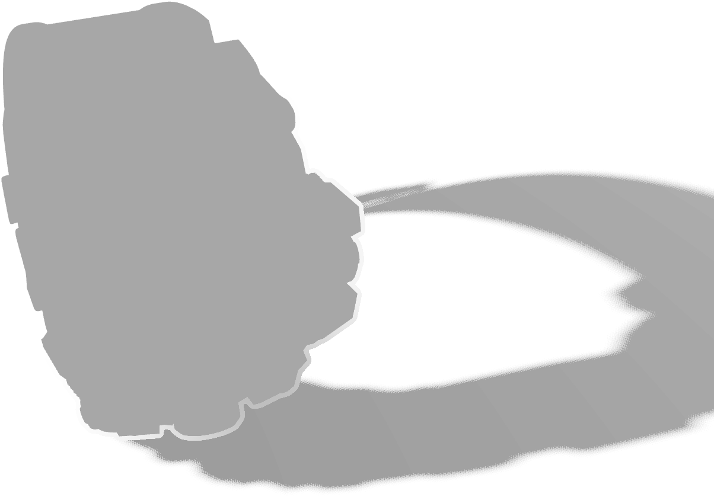
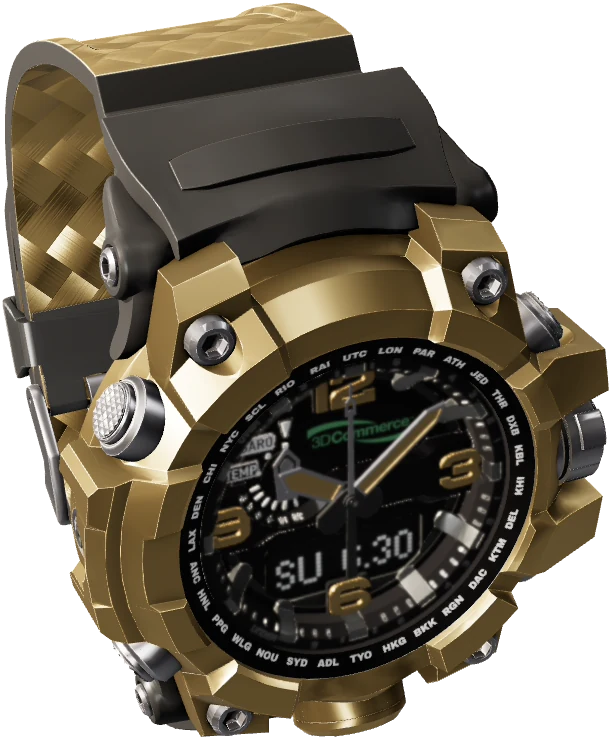

Fondo, sombra y producto salen de una sola foto. Al bajar, el producto se eleva y su sombra se queda en el suelo.
La sombra es una capa semitransparente: vale sobre cualquier color sin rehacer la foto.